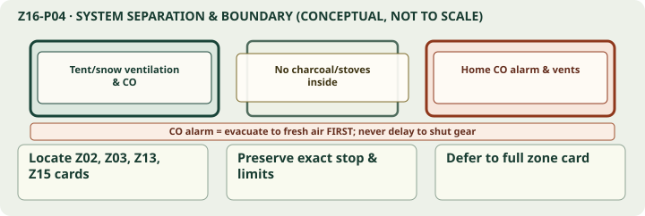

Z16-P04 · Field reference atlas · New manuscript
Carbon Monoxide Immediate Evacuation and Combustion Clearance Index
Consolidate zero-delay CO alarm evacuation and outdoor-only combustion boundaries across Z02, Z03, Z13, and Z15.
When it applies · Any tent, cabin, vehicle, basement, or home using stoves, heaters, fireplaces, or portable generators.
Equipment · Full offline reader (Z02, Z03, Z13, Z15), primary zone cards, and local emergency and agency references.

Actions
- Evacuate everyone immediately into fresh outdoor air and call 911 or the fire department whenever a CO alarm sounds or CO symptoms appear (Z13-P20, Z03-P40)—never delay exit to shut down equipment.[A01, C07, U05]
- Operate portable generators strictly outdoors at least 20 feet from windows, doors, vents, and garages with exhaust pointed away (Z03-P06, Z13-P06), and never run fuel stoves, grills, or charcoal inside tents, snow caves, vehicles, or enclosures (Z02-P44).[A01, C05, C06, U04]
- Clear snow-buried furnace, dryer exterior PVC vents (Z13-P24) and stranded-vehicle tailpipes (Z15-P14) before operating heating appliances or engines.[A01, U07, D19]
Failure recognition · Stopping to turn off a generator or furnace during a CO alarm—or cracking a tent zipper while burning a stove—causes fatal hypoxic collapse.[C05, C07, U05]
Verify · Battery-backed CO alarms are installed, generators sit at least 20 ft outdoors, and immediate fresh-air exit precedes any equipment action.[C06, C07, U04, U05]
Stop or change course · Stop all indoor fuel combustion immediately and leave the building at once on any CO alarm or unexplained headache, dizziness.[C07, U05]
Evidence and editorial notes
- A01 · FEMA / Ready.gov · Make a Plan (current web edition)
- Section: Cross-zone emergency prioritization and stop-threshold preservation · Conditions: Synthesizing Z01-Z15 emergency decision summaries in Z16
Support: Condensed emergency references must retain exact life-safety priorities, evacuation triggers, and call-911 thresholds from upstream primary guidance.
Limitations: Any summary omitting an upstream exception, stop rule, or specialist hold is invalid and must defer to the full zone card. · Conflicting evidence: None noted.
Editorial note: Governs Z16 emergency cross-reference fidelity. · Specialist reviewer: Emergency management and editorial QA reviewer
Primary source · checked 2026-11-24 - C05 · CPSC · Portable Heaters and Camping Equipment (current web edition)
- Section: Carbon monoxide poisoning from portable camping equipment · Conditions: Tents, campers, vehicles and other enclosed spaces
Support: Fuel-burning camping equipment can lead to fatal carbon monoxide buildup in enclosed spaces.
Limitations: High altitude increases incomplete combustion and CO production. · Conflicting evidence: None; aligns with CDC-CO and NPS guidance.
Editorial note: Hard-stop prohibition against indoor/vestibule/tent combustion. · Specialist reviewer: Carbon monoxide safety and emergency medicine
Primary source · checked 2026-11-24 - C06 · CPSC · CPSC Warns of Generator, Carbon Monoxide and Fire Hazards Ahead of Hurricane Season (2026 seasonal agency guidance)
- Section: Prevent CO poisoning > Portable generators · Conditions: Portable fuel-driven generator during an outage
Support: Use outdoors at least 20 feet from the home with exhaust directed away from buildings.
Limitations: Wind eddies, overhanging eaves, and open windows can still draw exhaust toward occupied structures. · Conflicting evidence: None; 20 ft is a minimum floor, not a guarantee in enclosed alleys.
Editorial note: Anchored numeric separation rule for portable generators only. · Specialist reviewer: Electrical and carbon monoxide safety
Primary source · checked 2026-11-24 - C07 · CPSC · Carbon Monoxide Fact Sheet (current web edition)
- Section: CO poisoning symptoms; what to do if suspected · Conditions: Suspected carbon monoxide exposure
Support: Escape to fresh air immediately and contact emergency services. Symptoms can include headache, dizziness, nausea and confusion.
Limitations: CO is colorless and odorless; symptoms mimic viral illness or altitude fatigue and can incapacitate sleepers without waking. · Conflicting evidence: None; aligns with CDC-CO.
Editorial note: Standard CO emergency stop condition across Z02 and Z03. · Specialist reviewer: Carbon monoxide safety and emergency medicine
Primary source · checked 2026-11-24 - D19 · National Weather Service · Winter Weather Safety: Stranded Motorists (Current web edition)
- Section: If stranded in a vehicle · Conditions: Stationary stranded vehicle in an open winter storm, exhaust clear, crew can monitor conditions
Support: Stay with the vehicle when safe, alert responders, and follow NWS precautions if running the engine briefly for warmth.
Limitations: Do not run with blocked exhaust or suspected CO. Timing does not make idling safe and is no indoor exception. · Conflicting evidence: See A02 claim audit for boundaries.
Editorial note: Added in A02 to separate a consequential source boundary. · Specialist reviewer: Winter SAR and CO safety
Primary source · checked 2026-11-25 - U04 · FEMA / Ready.gov · Home Fires (current web edition)
- Section: Home Fires > Smoke Alarms, Fire Extinguishers, and Escape Plans · Conditions: Residential fire prevention during outages and supplemental heating
Support: Test smoke alarms monthly on every level and outside sleeping areas, keep two exits clear from every room, store fuels outside living spaces in approved containers, and evacuate immediately if a fire exceeds incipient containment.
Limitations: Candles and improvised indoor flames dramatically elevate outage house-fire deaths. · Conflicting evidence: None; integrates with CPSC CO-alarm rules (C09).
Editorial note: Anchors outage fire prevention, fuel storage, and exit readiness in Z13. · Specialist reviewer: Fire prevention and residential safety
Primary source · checked 2026-11-24 - U05 · US EPA · Private Drinking Water Wells (current web edition)
- Section: Private Drinking Water Wells > Maintenance, Floods, and Testing · Conditions: Households relying on private domestic groundwater wells
Support: Private wells are not regulated by municipal utilities; test water annually (and after any flood, power loss with pressure drop, or plumbing repair) through a certified laboratory and keep wellheads sealed above grade away from runoff and chemicals.
Limitations: Visual clarity or normal taste never proves a private well is free of bacteria, nitrates, or arsenic. · Conflicting evidence: None; aligns with CDC-WELL (W18) and MDH-WELL-HOME.
Editorial note: Core private-well governance and testing cadence in Z13. · Specialist reviewer: Hydrogeology, licensed well contractor, and public health
Primary source · checked 2026-11-24 - U07 · U.S. EPA · Septic Systems: What to Do after the Flood (Current web edition)
- Section: Do I pump my tank during flooded or saturated drainfield conditions?; After the flood · Conditions: Flooded or saturated septic drainfield
Support: Conserve water and do not pump while the field is flooded or saturated. Arrange professional inspection and qualified servicing as conditions permit.
Limitations: Avoid use until local or professional directions allow. Tank buoyancy and recovery depend on site and system. · Conflicting evidence: See A02 claim audit for boundaries.
Editorial note: Grounds septic-system limits and outage water conservation in Z13. · Specialist reviewer: Onsite wastewater engineering and public health
Primary source · checked 2026-11-25
Source lineage · New manuscript (Z16 P20 emergency index) · Classification · New manuscript.